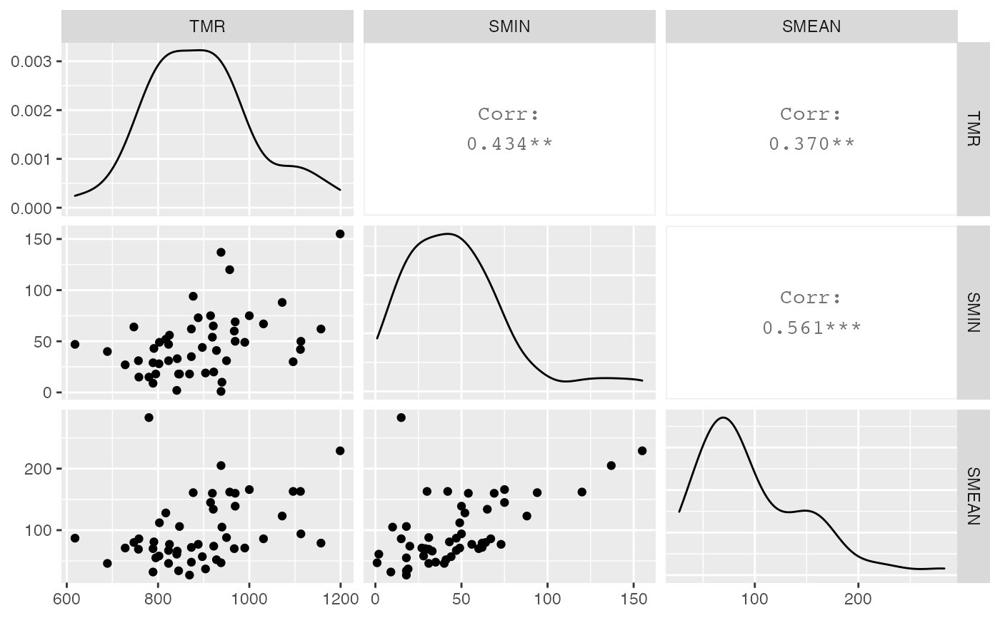

Échantillon de 50 villes (individus) tirées aléatoirement sur la pollution de l'air aux États-Unis en 1960
air_pollution
A data frame with 50 observations on the following 15 variables.
a factor with levels AUGUSTA
AUSTIN BEAUMONT BOSTON BRIDGEPO CHARLEST
CHARLOTT CHATTANO CHICAGO CLEVELAN
COLUMBUS DALLAS DAYTON DENVER DES_MOIN
DETROIT EL_PASO FALL_RIV FLINT FORT_WOR
FRESNO GALVESTO HUNTINGT INDIANAP JACKSON
JERSEY_C JOHNSTOW KNOXVILL MACON MEMPHIS
MIAMI MILWAUKE MOBILE NASHVIL NORFOLK
OMAHA PHOENIX PROVIDEN READING ROCKFORD
SAVANNAH SEATTLE SIOUX_FA SOUTH_BE TOLEDO
TOPEKA WINSTON YORK YOUNGSTO. Ville où les données ont été observées.
a numeric vector. Taux de mortalité exprimé en 1/10000.
a numeric vector. Plus petite valeur des relevés réalisés deux fois par semaine de sulfate (micro-g/m3 multiplié par 10).
a numeric vector. Moyenne arithmétique des relevés réalisés deux fois par semaine de sulfate (micro-g/m3 multiplié par 10).
a numeric vector. Plus grande valeur des relevés réalisés deux fois par semaine de sulfate (micro-g/m3 multiplié par 10).
a numeric vector. Plus petite valeur des relevés réalisés deux fois par semaine de particules suspendues dans l'air (micro-g/m3 multiplié par 10).
a numeric vector. Moyenne arithmétique des relevés réalisés deux fois par semaine de particules suspendues dans l'air (micro-g/m3 multiplié par 10).
a numeric vector. Logarithme de la plus grande valeur des relevés réalisés deux fois par semaine de particules suspendues dans l'air (micro-g/m3 multiplié par 10).
a numeric vector. Densité de la population par mile carré (multiplié par 0,1).
a numeric vector. Pourcentage de population blanche.
a numeric vector. Pourcentage de ménages avec un revenu au dessus du seuil de pauvreté.
a numeric vector. Pourcentage (multiplié par 10) de la population des 65 ans et plus.
a numeric vector. Logarithme (en base 10 et multiplié par 10) de la population.
a numeric vector. Logarithme de la densité de la population par mile carré (multiplié par 0,1).
a numeric vector. Logarithme de la plus grande valeur des relevés réalisés deux fois par semaine de particules suspendues dans l'air (micro-g/m3 multiplié par 10).
#> 'data.frame': 50 obs. of 15 variables: #> $ CITY : Factor w/ 49 levels "AUGUSTA","AUSTIN",..: 38 25 27 26 23 15 14 39 45 21 ... #> $ TMR : int 1096 789 1072 1199 967 950 841 1113 1031 845 ... #> $ SMIN : int 30 29 88 155 60 31 2 50 67 18 ... #> $ SMEAN : int 163 70 123 229 70 88 61 94 86 34 ... #> $ SMAX : int 349 161 245 340 137 188 188 186 309 198 ... #> $ PMIN : int 56 27 70 63 56 61 54 34 52 45 ... #> $ PMEAN : int 119 74 166 147 122 183 126 120 104 119 ... #> $ PMAX : int 223 124 452 253 219 329 229 242 193 304 ... #> $ PM2 : num 116.1 21.3 15.8 1357.2 18.1 ... #> $ PERWH : num 97.9 60 98.7 93.1 97 95.9 95.8 98.2 90.5 92.5 ... #> $ NONPOOR: num 83.9 69.1 73.3 87.3 73.2 87.1 86.9 86.1 86.1 78.5 ... #> $ GE65 : int 109 64 103 103 93 97 82 112 98 81 ... #> $ LPOP : num 5.86 5.27 5.45 5.79 5.41 ... #> $ l_pm2 : num 4.75 3.06 2.76 7.21 2.9 ... #> $ l_pmax : num 5.41 4.82 6.11 5.53 5.39 ...#> #> #>